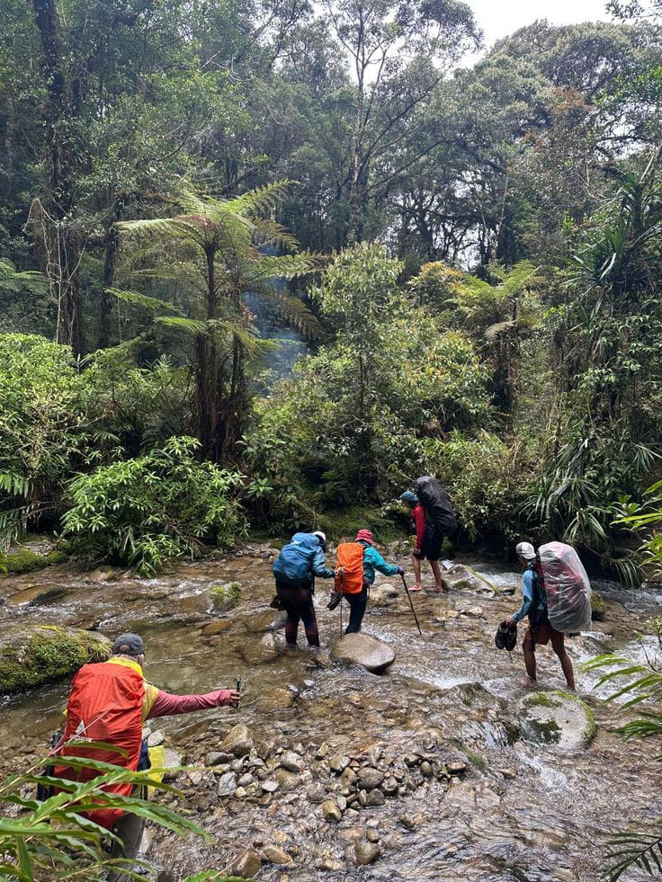
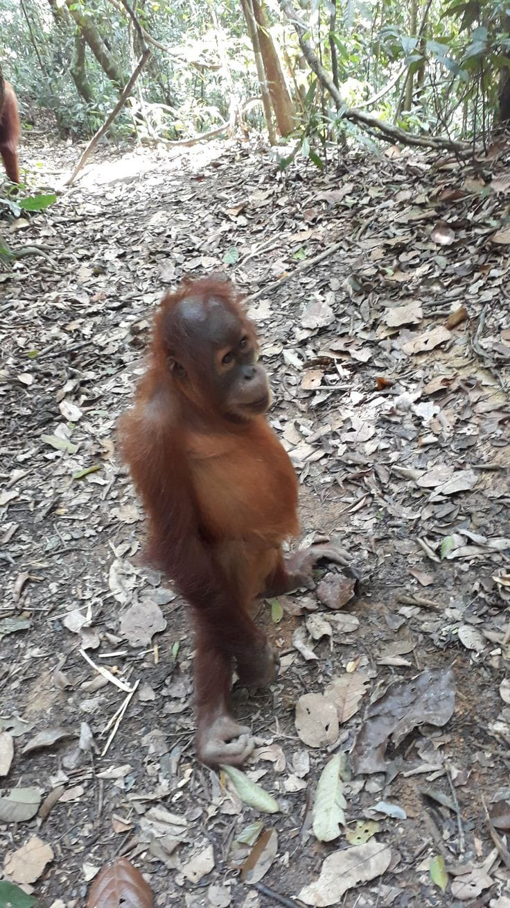
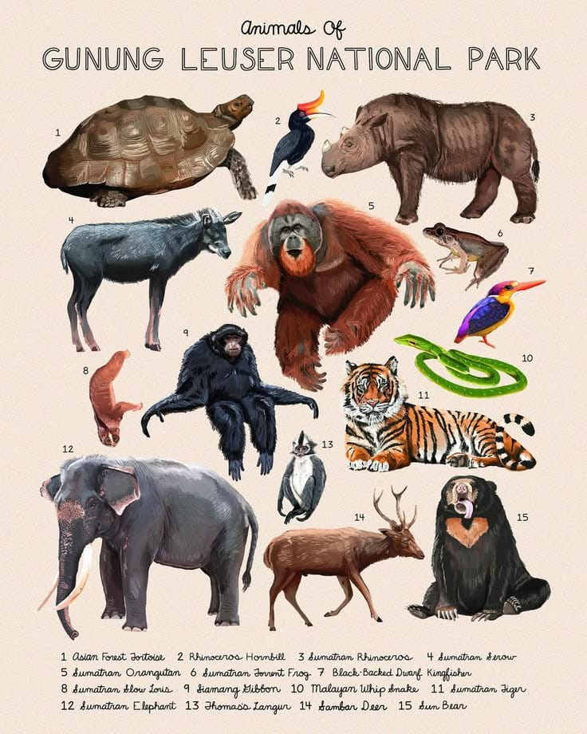
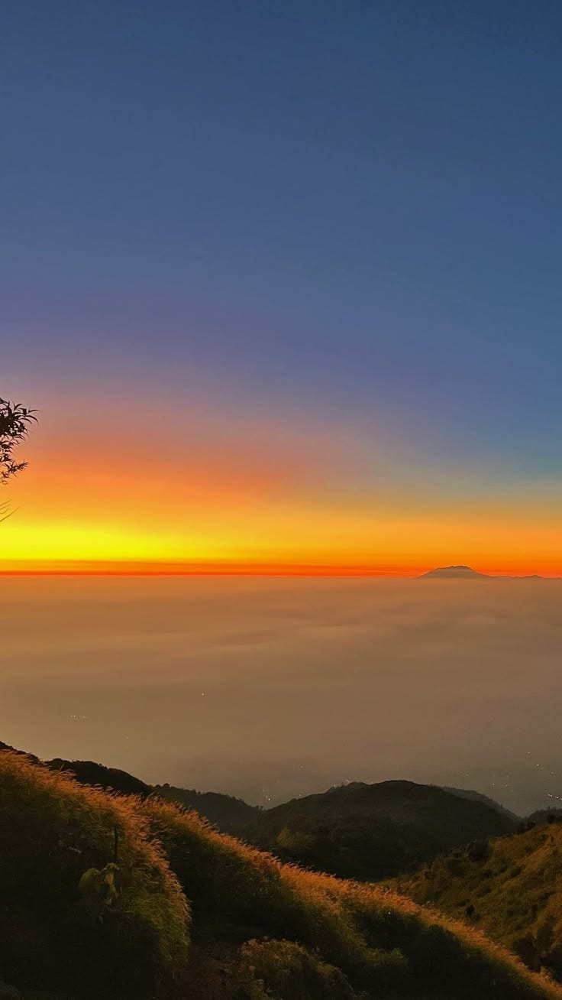

Ada magis yang sulit dijelaskan ketika kabut pagi perlahan menyingkir, menampakkan tajuk-tajuk pohon purba yang menjulang memeluk langit. Taman Nasional Gunung Leuser bukan sekadar titik di peta Sumatra, melainkan sebuah denyut nadi alam liar yang masih bernapas panjang.

Harmoni yang Tersisa
Jarang ada tempat di bumi yang menyimpan rahasia serapat belantara ini. Inilah satu-satunya panggung alam di mana orangutan sumatra, harimau, gajah, dan badak masih sudi berbagi rute jelajah yang sama. Berjalan di sini rasanya seperti memutar waktu ke era di mana manusia hanya bertindak sebagai tamu, bukan penguasa.


Merekam lanskap ini dengan mata (atau lensa kameramu) adalah sebuah keistimewaan. Namun, keheningan di sini sangat rapuh. Butuh kesadaran penuh agar keagungan ini tak sekadar berakhir sebagai dongeng pengantar tidur di masa depan.
Bekal Sebelum Mengetuk Pintu Rimba
Mendaki Leuser sama sekali tidak bisa diremehkan. Hutannya lebat, jalurnya panjang dan menguras napas. Butuh lebih dari sekadar keberanian untuk menapakkan kaki di sini. Berikut adalah hal esensial yang harus kamu tahu sebelum berangkat:
- latihan fisik yang cukup: Jangan kaget dengan medannya. lari, squat jump, atau lompat tali dari jauh-jauh hari agar otot kakimu tidak kaget menghadapi tanjakan yang berlumpur.
- Gears yang tepat: Sepatu trekking beralas cengkeram kuat adalah nyawa. Bawa jas hujan, gaiter (pelindung kaki dari pacet), dan pakaian cepat kering.
- Amunisi dokumentasi: Bawa kamera digital atau DSLR andalanmu untuk membidik lanskap liar ini. Pastikan bawa drybag untuk melindunginya dari kelembapan ekstrem.
- Bawa Ransel dan siapkan teman-teman:Bawa ramsum makanan yang cukup,pakaian kering dan bawa sleepin bag serta tenda yang membuat nyaman dan aman
- Dilarang keras menyampah: Bawa turun kembali semua bungkus logistikmu. Jangan tinggalkan jejak apa pun kecuali jejak sepatu.
- Jangan berisik: Matikan speaker bluetooth-mu. Hutan punya simfoninya sendiri. Suara keras akan membuat stres satwa liar dan merusak pengalaman pendaki lain.
- Jangan memprovokasi satwa: Jika berpapasan dengan satwa buas atau primata, jaga jarak aman. Jangan pernah memberi mereka makanan manusia.
- Hormati adat istiadat serta budaya yang ada:sebab kita hanya bertamu dan alam adalah milik tuhan dan adat yang ada
- Pilih Titik Masuk: Akses paling umum adalah melalui Bukit Lawang (Sumatra Utara) atau Ketambe (Aceh).
- Gunakan Pemandu Resmi: Wajib menyewa guide atau ranger lokal yang terdaftar di Himpunan Pramuwisata Indonesia (HPI) setempat. Jangan pernah nekat masuk tanpa pemandu.
- SIMAKSI: Urus Surat Izin Masuk Kawasan Konservasi (SIMAKSI) melalui kantor Balai Besar TNGL. Biasanya, jika kamu menggunakan jasa pemandu atau agen trekking lokal, mereka sudah akan menguruskan perizinan ini untukmu sepaket dengan biaya trip.

Kontak & Booking
Tertarik untuk menjelajah? Pastikan perjalananmu aman, berizin, dan didampingi pemandu lokal berlisensi. Hubungi instansi atau komunitas pemandu resmi di bawah ini untuk mengurus perizinan dan paket pendakianmu.
Layanan Informasi Resmi:
Balai Besar TNGL
📍 Jl. Selamat No. 137, Medan
📞 Telepon: (061) 7872919
✉️ Email: bbtngl@menlhk.go.id
🌐 Web: gunungleuser.or.id
Pusat Informasi Ketambe
📍 Ketambe, Aceh Tenggara
📱 WhatsApp: +62 812 3456 7890 (Contoh)
🤝 Melayani: Guide HPI, Porter, & SIMAKSI